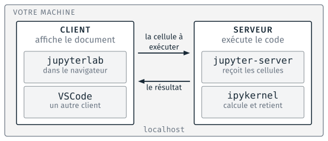
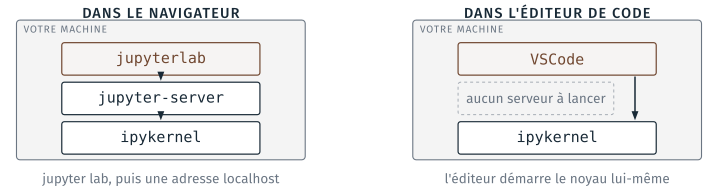

JupyterLab#
Un notebook est un fichier qui mélange du texte et des cellules de code. Pour travailler avec un notebook, il faut deux choses : un noyau (kernel), côté serveur, qui exécute le code des cellules, et un client, qui affiche le document et lui envoie les cellules.
Le noyau. Pour un notebook Python, c’est un interpréteur Python : celui de
base(Anaconda), ou celui d’un autre environnement. Le paquet qui fait d’un Python un noyau s’appelleipykernel;basel’a.Le client. Soit JupyterLab, livré avec Anaconda, qui s’affiche dans le navigateur ; soit un autre client, comme VS Code avec l’extension Jupyter, et c’est celui que le module emploie en séance.
{kind=link}

Le client et le serveur d’un notebook, tous deux sur le poste (schéma du cours 1).#
Le noyau est un processus Python qui garde les variables en mémoire entre
deux cellules. Le redémarrer les efface toutes, et l’ordre d’exécution des
cellules est celui des compteurs [1], [2], pas celui de la page ;
c’est le sujet du TD 3b.
Tester JupyterLab#
Le test, qui vérifie que Python exécute du code sur le poste sans rien configurer, est dans Anaconda, JupyterLab et VS Code, après celui d’Anaconda.
Lancer JupyterLab depuis l’Anaconda Prompt#
Navigator fait deux choses quand on clique Launch : il active
l’environnement affiché en haut de sa page, puis il lance jupyter lab.
Les deux mêmes commandes se tapent dans l’Anaconda Prompt, ou dans le terminal
« Anaconda Prompt » de VS Code (Python et environnement conda),
et elles montrent ce que la fiche cache.
jupyter lab n’est pas une commande de Windows : c’est un programme de
l’environnement actif, celui que l’invite affiche entre parenthèses.
Dans base, il est là. Dans un environnement créé au TD 4a, il n’y est
que si on l’y installe, et il entraîne ipykernel avec lui :
conda install -n recette -c conda-forge jupyterlab
conda activate recette
jupyter lab
Pour ouvrir directement le dossier du TD, écrire son chemin après la
commande ; le plus simple est de taper jupyter lab suivi d’une espace,
puis de glisser le dossier depuis l’explorateur dans la fenêtre, ce qui
écrit son chemin :
(base) C:\Users\eleve>jupyter lab "C:\Users\eleve\Desktop\cours1\4_notebooks"
[I 2026-09-20 08:54:26.493 ServerApp] Serving notebooks from local directory: C:\Users\eleve\Desktop\cours1\4_notebooks
[I 2026-09-20 08:54:26.493 ServerApp] Jupyter Server 2.21.0 is running at:
[I 2026-09-20 08:54:26.493 ServerApp] http://localhost:8888/lab?token=ce65d1c3…
[I 2026-09-20 08:54:26.493 ServerApp] Use Control-C to stop this server and shut down all kernels (twice to skip confirmation).
Ce qui s’affiche est le journal du serveur. localhost:8888 veut dire
« sur ce poste, port 8888 » : le navigateur parle à un serveur qui tourne
sur la même machine. Le token dans l’adresse est un mot de passe à usage
unique, qui empêche un autre poste du réseau d’exécuter du code ici.
Firefox s’ouvre sur cette adresse ; sinon, la copier dans Firefox
(J5).
La fenêtre reste occupée tant que JupyterLab tourne. Fermer l’onglet du
navigateur n’arrête pas le serveur : c’est Ctrl + C dans la fenêtre,
deux fois, qui l’arrête, ou le menu File, Shut Down dans JupyterLab. Un
serveur oublié occupe le port 8888, et le suivant s’ouvre sur 8889.
JupyterLab, Notebook, VS Code : trois clients pour le même fichier#
Navigator propose deux fiches, « Notebook » et « JupyterLab ». Ce sont
deux clients web du même projet Jupyter : Notebook est le plus ancien, une
page par notebook ; JupyterLab est le plus complet, avec un explorateur
de fichiers, plusieurs onglets et un terminal. Depuis 2023, Notebook est
construit sur les mêmes composants que JupyterLab. Les deux ouvrent les
mêmes fichiers .ipynb et lancent le même serveur ; aucun ne remplace
l’autre, et le choix ne change rien au fichier.
VS Code est un troisième client. Il ouvre le même fichier, mais sans
serveur : il démarre ipykernel lui-même, dans l’environnement choisi
comme noyau. C’est pourquoi un environnement ouvert dans VS Code n’a
besoin que d”ipykernel, pas de jupyterlab.
{kind=link}

Deux clients, le même noyau (schéma du cours 1).#
La configuration des notebooks dans VS Code est dans VS Code : notebooks.
Documentation officielle#
JupyterLab (en anglais), section « Getting Started ».